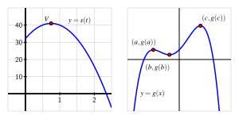

What are the critical numbers of a function \(f\) and how are they connected to identifying the most extreme values the function achieves?
How does the first derivative of a function reveal important information about the behavior of the function, including the function’s extreme values?
How can the second derivative of a function be used to help identify extreme values of the function?
In many different settings, we are interested in knowing where a function achieves its least and greatest values. These can be important in applications — say to identify a point at which maximum profit or minimum cost occurs — or in theory to characterize the behavior of a function or a family of related functions.
Consider the simple and familiar example of a parabolic function such as \(s(t) = -16t^2 + 32t + 48\) (shown at left in Figure 3.4.2) that represents the height of an object tossed vertically: its maximum value occurs at the vertex of the parabola and represents the greatest height the object reaches. This maximum value is an especially important point on the graph, the point at which the curve changes from increasing to decreasing.
Definition3.4.1.
Given a function \(f\text{,}\) we say that \(f(c)\) is a global or absolute maximum of \(f\) provided that \(f(c) \ge f(x)\) for all \(x\) in the domain of \(f\text{,}\) and similarly we call \(f(c)\) a global or absolute minimum of \(f\) whenever \(f(c) \le f(x)\) for all \(x\) in the domain of \(f\text{.}\)
For instance, in Figure 3.4.2, \(g\) has a global maximum of \(g(c)\text{,}\) but \(g\) does not appear to have a global minimum, as the graph of \(g\) seems to decrease without bound. Note that the point \((c,g(c))\) marks a fundamental change in the behavior of \(g\text{,}\) where \(g\) changes from increasing to decreasing; similar things happen at both \((a,g(a))\) and \((b,g(b))\text{,}\) although these points are not global minima or maxima.

Figure3.4.2.At left, \(s(t) = -16t^2 + 24t + 32\) whose vertex is \((\frac{3}{4}, 41)\text{;}\) at right, a function \(g\) that demonstrates several high and low points.
Definition3.4.3.
We say that \(f(c)\) is a local maximum or relative maximum of \(f\) provided that \(f(c) \ge f(x)\) for all \(x\) near \(c\text{,}\) and \(f(c)\) is called a local or relative minimum of \(f\) whenever \(f(c) \le f(x)\) for all \(x\) near \(c\text{.}\)
For example, in Figure 3.4.2, \(g\) has a relative minimum of \(g(b)\) at the point \((b,g(b))\) and a relative maximum of \(g(a)\) at \((a,g(a))\text{.}\) We have already identified the global maximum of \(g\) as \(g(c)\text{;}\) it can also be considered a relative maximum. Any maximum or minimum may also be called an extreme value of \(f\text{.}\)
We would like to use calculus ideas to identify and classify key function behavior, including the location of relative extremes. Of course, if we are given a graph of a function, it is often straightforward to locate these important behaviors visually.
Warm-Up3.4.1.
Consider the function \(h\) given by the graph in Figure 3.4.4. Use the graph to answer each of the following questions.
Figure3.4.4.The graph of a function \(h\) on the interval \([-3,3]\text{.}\)
Identify all of the values of \(c\) such that \(-3 \lt c \lt 3\) for which \(h(c)\) is a local maximum of \(h\text{.}\)
Identify all of the values of \(c\) such that \(-3 \lt c \lt 3\) for which \(h(c)\) is a local minimum of \(h\text{.}\)
Does \(h\) have a global maximum on the interval \([-3,3]\text{?}\) If so, what is the value of this global maximum?
Does \(h\) have a global minimum on the interval \([-3,3]\text{?}\) If so, what is its value?
Identify all values of \(c\) for which \(h'(c) = 0\text{.}\)
Identify all values of \(c\) for which \(h'(c)\) does not exist.
True or false: every relative maximum and minimum of \(h\) occurs at a point where \(h'(c)\) is either zero or does not exist.
True or false: at every point where \(h'(c)\) is zero or does not exist, \(h\) has a relative maximum or minimum.
Subsection3.4.1Critical numbers and the first derivative test
Figure3.4.5.From left to right, a function with a relative maximum where its derivative is zero; a function with a relative maximum where its derivative is undefined; a function with neither a maximum nor a minimum at a point where its derivative is zero; a function with a relative minimum where its derivative is zero; and a function with a relative minimum where its derivative is undefined.
If a continuous function has a relative maximum at \(c\text{,}\) then it is both necessary and sufficient that the function change from being increasing just before \(c\) to decreasing just after \(c\text{.}\) A continuous function has a relative minimum at \(c\) if and only if the function changes from decreasing to increasing at \(c\text{.}\) (See Figure 3.4.5.) There are only two possible ways for these changes in behavior to occur: either \(f'(c) = 0\) or \(f'(c)\) is undefined. Because these values of \(c\) are so important, we call them critical numbers.
Definition3.4.6.
We say that a function \(f\) has a critical number at \(x = c\) provided that \(c\) is in the domain of \(f\text{,}\) and \(f'(c) = 0\) or \(f'(c)\) is undefined.
Critical numbers are the only possible locations where the function \(f\) may have relative extremes. Note that not every critical number produces a maximum or minimum; in the middle graph of Figure 3.4.5, the function pictured there has a horizontal tangent line at the noted point, but the function is increasing before and increasing after, so the critical number does not yield a maximum or minimum.
When \(c\) is a critical number, we say that \((c,f(c))\) is a critical point of the function, or that \(f(c)\) is a critical value . The first derivative test summarizes how sign changes in the first derivative (which can only occur at critical numbers) indicate the presence of a local maximum or minimum for a given function.
First Derivative Test.
If \(p\) is a critical number of a continuous function \(f\) that is differentiable near \(p\) (except possibly at \(x = p\)), then \(f\) has a relative maximum at \(p\) if and only 1
Technically, we also have to assume that \(f\) is not piecewise constant on any intervals. This is because every point on a horizontal line is a relative maximum (and relative minimum) despite the fact that the derivative doesn’t change sign at any point along the horizontal line.
if \(f'\) changes sign from positive to negative at \(p\text{,}\) and \(f\) has a relative minimum at \(p\) if and only if \(f'\) changes sign from negative to positive at \(p\text{.}\)
Example3.4.7.
Let \(f\) be a function whose derivative is given by the formula \(f'(x) = e^{-2x}(3-x)(x+1)^2\text{.}\) Determine all critical numbers of \(f\) and decide whether a relative maximum, relative minimum, or neither occurs at each.
Solution.
Since we already have \(f'(x)\) written in factored form, it is straightforward to find the critical numbers of \(f\text{.}\) Because \(f'(x)\) is defined for all values of \(x\text{,}\) we need only determine where \(f'(x) = 0\text{.}\) From the equation
and the zero product property, it follows that \(x = 3\) and \(x = -1\) are critical numbers of \(f\text{.}\) (There is no value of \(x\) that makes \(e^{-2x} = 0\text{.}\))
Next, to apply the first derivative test, we’d like to know the sign of \(f'(x)\) at inputs near the critical numbers. Because the critical numbers are the only locations at which \(f'\) can change sign, it follows that the sign of the derivative is the same on each of the intervals created by the critical numbers: for instance, the sign of \(f'\) must be the same for every \(x \lt -1\text{.}\) We create a first derivative sign chart to summarize the sign of \(f'\) on the relevant intervals, along with the corresponding behavior of \(f\text{.}\)
Figure3.4.8.The first derivative sign chart for a function \(f\) whose derivative is given by the formula \(f'(x) = e^{-2x}(3-x)(x+1)^2\text{.}\)
To produce the first derivative sign chart in Figure 3.4.8 we identify the sign of each factor of \(f'(x)\) at one selected point in each interval. For instance, for \(x \lt -1\text{,}\) we could determine the sign of \(e^{-2x}\text{,}\)\((3-x)\text{,}\) and \((x+1)^2\) at the value \(x = -2\text{.}\) We note that both \(e^{-2x}\) and \((x+1)^2\) are positive regardless of the value of \(x\text{,}\) while \((3-x)\) is also positive at \(x = -2\text{.}\) Hence, each of the three terms in \(f'\) is positive, which we indicate by writing “\(+++\text{.}\)” Taking the product of three positive terms results in a positive value for \(f'\text{,}\) which we denote by the “\(+\)” in the interval to the left of \(x = -1\text{.}\) And, since \(f'\) is positive on that interval, we know that \(f\) is increasing, so we write “INC” to represent the behavior of \(f\text{.}\) In a similar way, we find that \(f'\) is positive and \(f\) is increasing on \(-1 \lt x \lt 3\text{,}\) and \(f'\) is negative and \(f\) is decreasing for \(x \gt 3\text{.}\)
Now we look for critical numbers at which \(f'\) changes sign. In this example, \(f'\) changes sign only at \(x = 3\text{,}\) from positive to negative, so \(f\) has a relative maximum at \(x = 3\text{.}\) Although \(f\) has a critical number at \(x = -1\text{,}\) since \(f\) is increasing both before and after \(x = -1\text{,}\)\(f\) has neither a minimum nor a maximum at \(x = -1\text{.}\)
Activity3.4.2.
Suppose that \(h(x) = x^2 -2x + 7\text{.}\)
Suppose that \(g(x)\) is a continuous function whose first derivative is \(g'(x) = (x+4)(x-1)^2\text{.}\)
Determine all critical numbers of \(h\) and all the critical numbers of \(g\text{.}\)
By developing a carefully labeled first derivative sign chart for each function, decide whether \(h\) and \(g\) have a local maximum, local minimum, or neither at each critical number.
Subsection3.4.2The second derivative test
Recall that the second derivative of a function tells us several important things about the behavior of the function itself. For instance, if \(f''\) is positive on an interval, then we know that \(f'\) is increasing on that interval and, consequently, that \(f\) is concave up, so throughout that interval the tangent line to \(y = f(x)\) lies below the curve at every point. At a point where \(f'(p) = 0\text{,}\) the sign of the second derivative determines whether \(f\) has a local minimum or local maximum at the critical number \(p\text{.}\)
Figure3.4.9.Four possible graphs of a function \(f\) with a horizontal tangent line at a critical point.
In Figure 3.4.9, we see the four possibilities for a function \(f\) that has a critical number \(p\) at which \(f'(p) = 0\text{,}\) provided \(f''(p)\) is not zero on an interval including \(p\) (except possibly at \(p\)). On either side of the critical number, \(f''\) can be either positive or negative, and hence \(f\) can be either concave up or concave down. In the first two graphs, \(f\) does not change concavity at \(p\text{,}\) and in those situations, \(f\) has either a local minimum or local maximum. In particular, if \(f'(p) = 0\) and \(f''(p) \lt 0\text{,}\) then \(f\) is concave down at \(p\) with a horizontal tangent line, so \(f\) has a local maximum there. This fact, along with the corresponding statement for when \(f''(p)\) is positive, is the substance of the second derivative test.
Second Derivative Test.
If \(p\) is a critical number of a continuous function \(f\) such that \(f'(p) = 0\) and \(f''(p) \ne 0\text{,}\) then \(f\) has a relative maximum at \(p\) if and only if \(f''(p) \lt 0\text{,}\) and \(f\) has a relative minimum at \(p\) if and only if \(f''(p) \gt 0\text{.}\)
In the event that \(f''(p) = 0\text{,}\) the second derivative test is inconclusive. That is, the test doesn’t provide us any information. This is because if \(f''(p) = 0\text{,}\) it is possible that \(f\) has a local minimum, local maximum, or neither. 2
Consider the functions \(f(x) = x^4\text{,}\)\(g(x) = -x^4\text{,}\) and \(h(x) = x^3\) at the critical point \(p = 0\text{.}\)
Just as a first derivative sign chart reveals all of the increasing and decreasing behavior of a function, we can construct a second derivative sign chart that demonstrates all of the important information involving concavity.
Example3.4.10.
Let \(f(x)\) be a function whose first derivative is \(f'(x) = 3x^4 - 9x^2\text{.}\) Construct both first and second derivative sign charts for \(f\text{,}\) fully discuss where \(f\) is increasing and decreasing and concave up and concave down, identify all relative extreme values, and sketch a possible graph of \(f\text{.}\)
Solution.
Since we know \(f'(x) = 3x^4 - 9x^2\text{,}\) we can find the critical numbers of \(f\) by solving \(3x^4 - 9x^2 = 0\text{.}\) Factoring, we observe that
so that \(x = 0, \pm\sqrt{3}\) are the three critical numbers of \(f\text{.}\) The first derivative sign chart for \(f\) is given in Figure 3.4.11.
Figure3.4.11.The first derivative sign chart for \(f\) when \(f'(x) = 3x^4 - 9x^2 = 3x^2(x^2-3)\text{.}\)
We see that \(f\) is increasing on the intervals \((-\infty, -\sqrt{3})\) and \((\sqrt{3}, \infty)\text{,}\) and \(f\) is decreasing on \((-\sqrt{3},0)\) and \((0, \sqrt{3})\text{.}\) By the first derivative test, this information tells us that \(f\) has a local maximum at \(x = -\sqrt{3}\) and a local minimum at \(x = \sqrt{3}\text{.}\) Although \(f\) also has a critical number at \(x = 0\text{,}\) neither a maximum nor minimum occurs there since \(f'\) does not change sign at \(x = 0\text{.}\)
Next, we move on to investigate concavity. Differentiating \(f'(x) = 3x^4 - 9x^2\text{,}\) we see that \(f''(x) = 12x^3 - 18x\text{.}\) Since we are interested in knowing the intervals on which \(f''\) is positive and negative, we first find where \(f''(x) = 0\text{.}\) Observe that
This equation has solutions \(x = 0, \pm\sqrt{\frac{3}{2}}\text{.}\) Building a sign chart for \(f''\) in the exact same way we do for \(f'\text{,}\) we see the result shown in Figure 3.4.12.
Figure3.4.12.The second derivative sign chart for \(f\) when \(f''(x) = 12x^3-18x = 12x^2\left(x^2-\frac{3}{2} \right)\text{.}\)
Therefore, \(f\) is concave down on the intervals \((-\infty, -\sqrt{\frac{3}{2}})\) and \((0, \sqrt{\frac{3}{2}})\text{,}\) and concave up on \((-\sqrt{\frac{3}{2}},0)\) and \((\sqrt{\frac{3}{2}}, \infty)\text{.}\)
Putting all of this information together, we now see a complete and accurate possible graph of \(f\) in Figure 3.4.13.
Figure3.4.13.A possible graph of the function \(f\) in Example 3.4.10.
The point \(A = (-\sqrt{3}, f(-\sqrt{3}))\) is a local maximum, because \(f\) is increasing prior to \(A\) and decreasing after; similarly, the point \(E = (\sqrt{3}, f(\sqrt{3})\) is a local minimum. Note, too, that \(f\) is concave down at \(A\) and concave up at \(E\text{,}\) which is consistent both with our second derivative sign chart and the second derivative test. At points \(B\) and \(D\text{,}\) concavity changes, as we saw in the results of the second derivative sign chart in Figure 3.4.12. Finally, at point \(C\text{,}\)\(f\) has a critical point with a horizontal tangent line, but neither a maximum nor a minimum occurs there, since \(f\) is decreasing both before and after \(C\text{.}\) It is also the case that concavity changes at \(C\text{.}\)
While we completely understand where \(f\) is increasing and decreasing, where \(f\) is concave up and concave down, and where \(f\) has relative extremes, we do not know any specific information about the \(y\)-coordinates of points on the curve. For instance, while we know that \(f\) has a local maximum at \(x = -\sqrt{3}\text{,}\) we don’t know the value of that maximum because we do not know \(f(-\sqrt{3})\text{.}\) Any vertical translation of our sketch of \(f\) in Figure 3.4.13 would satisfy the given criteria for \(f\text{.}\)
Points \(B\text{,}\)\(C\text{,}\) and \(D\) in Figure 3.4.13 are locations at which the concavity of \(f\) changes. We give a special name to any such point.
Definition3.4.14.
If \(p\) is a value in the domain of a continuous function \(f\) at which \(f\) changes concavity, then we say that \((p,f(p))\) is an inflection point (or point of inflection) of \(f\text{.}\)
Just as we look for locations where \(f\) changes from increasing to decreasing at points where \(f'(p) = 0\) or \(f'(p)\) is undefined, so too we find where \(f''(p) = 0\) or \(f''(p)\) is undefined to see if there are points of inflection at these locations.
At this point in our study, it is important to remind ourselves of the big picture that derivatives help to paint: the sign of the first derivative \(f'\) tells us whether the function \(f\) is increasing or decreasing, while the sign of the second derivative \(f''\) tells us how the function \(f\) is increasing or decreasing.
Activity3.4.3.
Suppose that \(g\) is a function whose second derivative, \(g''\text{,}\) is given by the graph in Figure 3.4.15.
Figure3.4.15.The graph of \(y = g''(x)\text{.}\)
Find the \(x\)-coordinates of all points of inflection of \(g\text{.}\)
Fully describe the concavity of \(g\) by making an appropriate sign chart.
Suppose you are given that \(g'(-1.67857351) = 0\text{.}\) Is there is a local maximum, local minimum, or neither (for the function \(g\)) at this critical number of \(g\text{,}\) or is it impossible to say? Why?
This problem concerns a function about which the following information is known:
\(f\) is a differentiable function defined at every real number \(x\)
\(\displaystyle f(0) = -1/2\)
\(y = f'(x)\) has its graph given at center in Figure 3.4.19
Figure3.4.19.At center, a graph of \(y = f'(x)\text{;}\) at left, axes for plotting \(y = f(x)\text{;}\) at right, axes for plotting \(y = f''(x)\text{.}\)
Construct a first derivative sign chart for \(f\text{.}\) Clearly identify all critical numbers of \(f\text{,}\) where \(f\) is increasing and decreasing, and where \(f\) has local extrema.
On the right-hand axes, sketch an approximate graph of \(y = f''(x)\text{.}\)
Construct a second derivative sign chart for \(f\text{.}\) Clearly identify where \(f\) is concave up and concave down, as well as all inflection points.
On the left-hand axes, sketch a possible graph of \(y = f(x)\text{.}\)
2.
Suppose that \(g\) is a differentiable function and \(g'(2) = 0\text{.}\) In addition, suppose that on \(1 \lt x\lt 2\) and \(2 \lt x \lt 3\) it is known that \(g'(x)\) is positive.
Does \(g\) have a local maximum, local minimum, or neither at \(x = 2\text{?}\) Why?
Suppose that \(g''(x)\) exists for every \(x\) such that \(1 \lt x \lt 3\text{.}\) Reasoning graphically, describe the behavior of \(g''(x)\) for \(x\)-values near \(2\text{.}\)
Besides being a critical number of \(g\text{,}\) what is special about the value \(x = 2\) in terms of the behavior of the graph of \(g\text{?}\)
3.
Let \(p\) be a function whose second derivative is \(p''(x) = (x+1)(x-2)e^{-x}\text{.}\)
Construct a second derivative sign chart for \(p\) and determine all inflection points of \(p\text{.}\)
Suppose you also know that \(x = \frac{\sqrt{5}-1}{2}\) is a critical number of \(p\text{.}\) Does \(p\) have a local minimum, local maximum, or neither at \(x = \frac{\sqrt{5}-1}{2}\text{?}\) Why?
If the point \((2, \frac{12}{e^2})\) lies on the graph of \(y = p(x)\) and \(p'(2) = -\frac{5}{e^2}\text{,}\) find the equation of the tangent line to \(y = p(x)\) at the point where \(x = 2\text{.}\) Does the tangent line lie above the curve, below the curve, or neither at this value? Why?